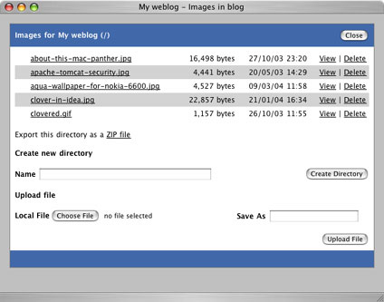

|
Since blog entries are just short HTML fragments, the HTML <img> tag can be used to reference and include images. For convenience, Pebble provides a mechanism for you to upload images to your blog so that they can be included in your blog entries. Typically images are placed somewhere underneath the root of the web application from which they are referenced. However, Pebble provides a facility whereby you can store your images in the same location that your blog entries are stored on disk. This helps to maintain the separation between your data and the Pebble web application and allows you to easily upgrade the Pebble web application independently of your blog content.
Uploading Images
To upload the images to your blog directory, you have a couple of options. One of these is to simply copy or FTP the images to the server where your blog entries are stored, placing them in a directory called images underneath the blog.dir directory. While this is quick and easy, it is often not possible if you are frequently behind a firewall that blocks FTP access. For this reason, Pebble provides a mechanism for you to upload images to your blog through your web browser. To do this, after logging in, click the Images link.
To upload an image, choose the file that you would like to upload and click the Upload File button. The Save As field represents tells Pebble what the file should be called when being saved on the server and this defaults to the same name as the local file. When the file has been uploaded, the window will be refreshed confirming that the file has been uploaded.
Using Images
To use this image in a blog entry and help ensure that your blog content is unaffected if you choose to move your blog, it's recommended that you access the image using a relative URI as follows.
<img src="./images/about-this-mac-panther.jpg" />
Managing Images
Other links in the images window allow you to copy, rename, delete and view files. Also, directories can be created and the entire contents of the current directory can be exported (downloaded) as a ZIP file.
Quotas
Although more relevant to team and multi-user blogs, quotas can be enforced to restrict how much disk space each blog has to store images and arbitrary files. By default, the maximum size of file that can be uploaded is 2048KB and quotas are not enabled.
To modify these values, open the /WEB-INF/classes/pebble.properties file and edit the blog.uploadFileSize and blog.uploadFileQuota properties. You will need to restart Pebble for these changes to take effect. When quotas are enabled, all of the stored images, files and files in your theme count toward this.
|